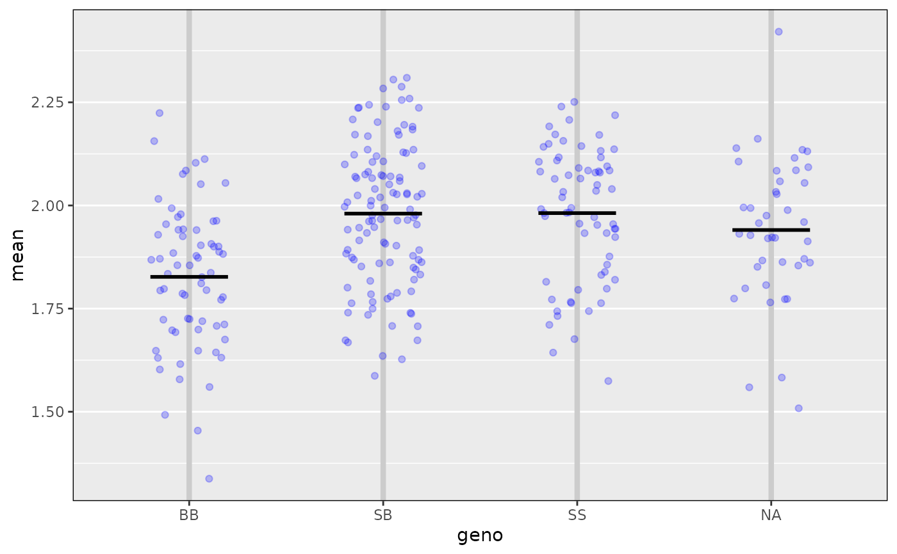
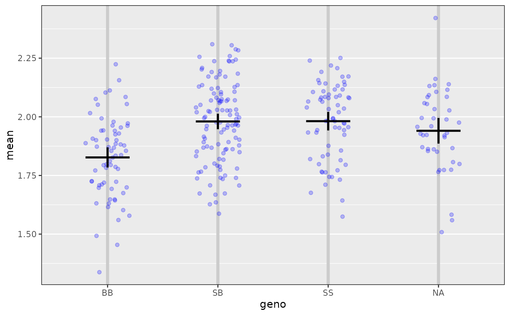
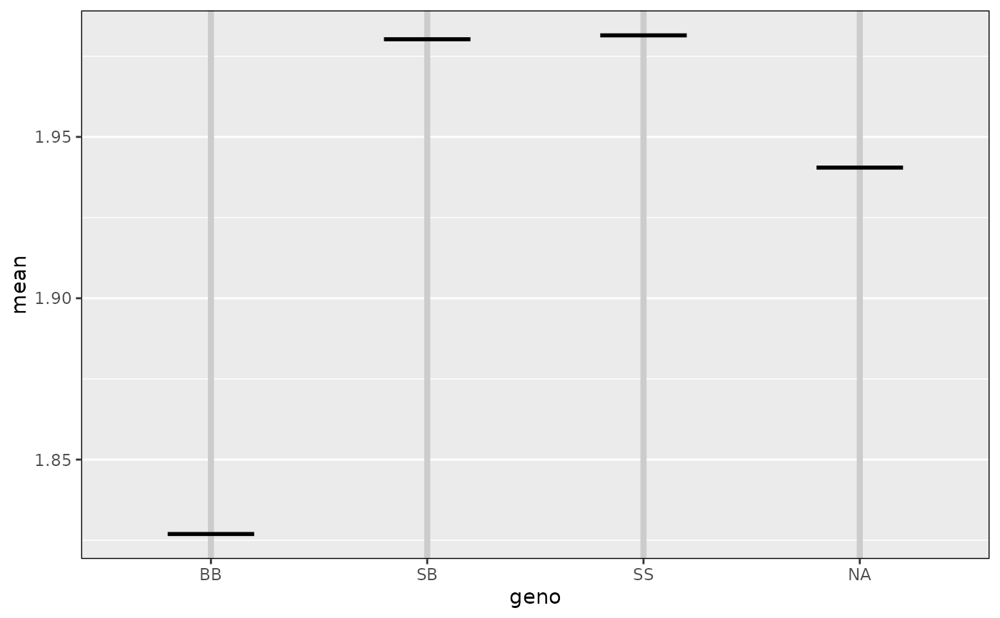
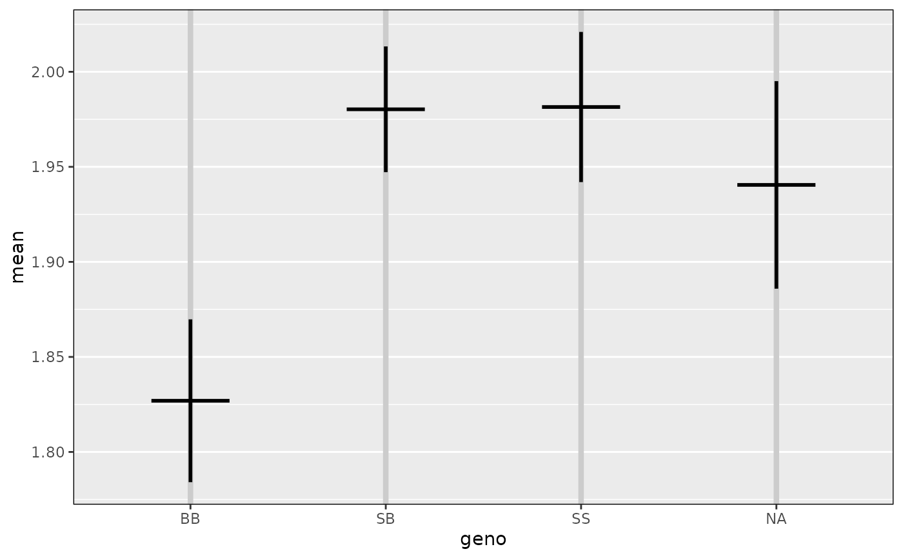

Plot phenotype vs genotype for a single putative QTL and a single phenotype.
Usage
ggplot_pxg(
geno,
pheno,
sort = TRUE,
SEmult = NULL,
pooledSD = TRUE,
jitter = 0.2,
bgcolor = "gray90",
seg_width = 0.4,
seg_lwd = 2,
seg_col = "black",
hlines = NULL,
hlines_col = "white",
hlines_lty = 1,
hlines_lwd = 1,
vlines_col = "gray80",
vlines_lty = 1,
vlines_lwd = 3,
force_labels = TRUE,
alternate_labels = FALSE,
omit_points = FALSE,
...
)
mean_pxg(geno, pheno, dataframe = NULL)Arguments
- geno
Vector of genotypes, as produced by
maxmargwith specificchrandpos.- pheno
Vector of phenotypes.
- sort
If TRUE, sort genotypes from largest to smallest.
- SEmult
If specified, interval estimates of the within-group averages will be displayed, as
mean +/- SE * SEmult.- pooledSD
If TRUE and
SEmultis specified, calculated a pooled within-group SD. Otherwise, get separate estimates of the within-group SD for each group.- jitter
Amount to jitter the points horizontally, if a vector of length > 0, it is taken to be the actual jitter amounts (with values between -0.5 and 0.5).
- bgcolor
Background color for the plot.
- seg_width
Width of segments at the estimated within-group averages
- seg_lwd
Line width used to plot estimated within-group averages
- seg_col
Line color used to plot estimated within-group averages
- hlines
Locations of horizontal grid lines.
- hlines_col
Color of horizontal grid lines
- hlines_lty
Line type of horizontal grid lines
- hlines_lwd
Line width of horizontal grid lines
- vlines_col
Color of vertical grid lines
- vlines_lty
Line type of vertical grid lines
- vlines_lwd
Line width of vertical grid lines
- force_labels
If TRUE, force all genotype labels to be shown.
- alternate_labels
If TRUE, place genotype labels in two rows
- omit_points
If TRUE, omit the points, just plotting the averages (and, potentially, the +/- SE intervals).
- ...
Additional graphics parameters, passed to
plot.- dataframe
Supplied data frame, or constructed from
genoandphenoifNULL.
Value
object of class ggplot.
Examples
# load qtl2 package for data and genoprob calculation
library(qtl2)
# read data
iron <- read_cross2(system.file("extdata", "iron.zip", package="qtl2"))
# insert pseudomarkers into map
map <- insert_pseudomarkers(iron$gmap, step=1)
# calculate genotype probabilities
probs <- calc_genoprob(iron, map, error_prob=0.002)
# inferred genotype at a 28.6 cM on chr 16
geno <- maxmarg(probs, map, chr=16, pos=28.6, return_char=TRUE)
# plot phenotype vs genotype
ggplot_pxg(geno, log10(iron$pheno[,1]), ylab=expression(log[10](Liver)))
#> Warning: Using `size` aesthetic for lines was deprecated in ggplot2 3.4.0.
#> ℹ Please use `linewidth` instead.
#> ℹ The deprecated feature was likely used in the qtl2ggplot package.
#> Please report the issue at
#> <https://github.com/byandell-sysgen/qtl2ggplot/issues>.

# include +/- 2 SE intervals
ggplot_pxg(geno, log10(iron$pheno[,1]), ylab=expression(log[10](Liver)),
SEmult=2)

# plot just the means
ggplot_pxg(geno, log10(iron$pheno[,1]), ylab=expression(log[10](Liver)),
omit_points=TRUE)

# plot just the means +/- 2 SEs
ggplot_pxg(geno, log10(iron$pheno[,1]), ylab=expression(log[10](Liver)),
omit_points=TRUE, SEmult=2)
